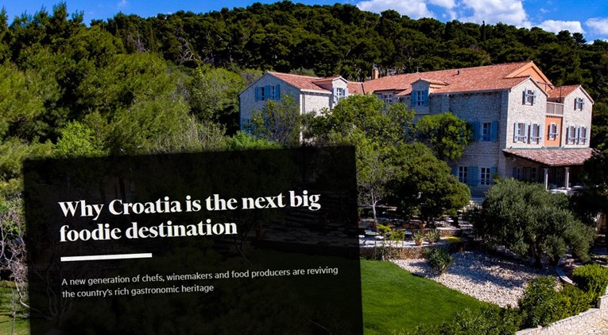
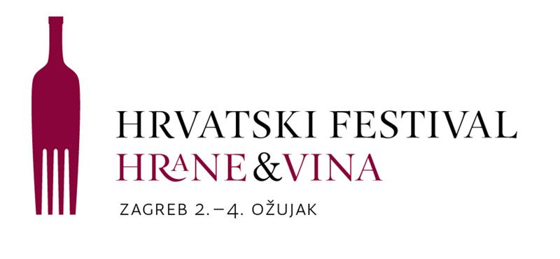
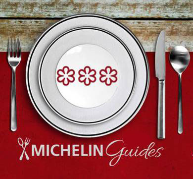
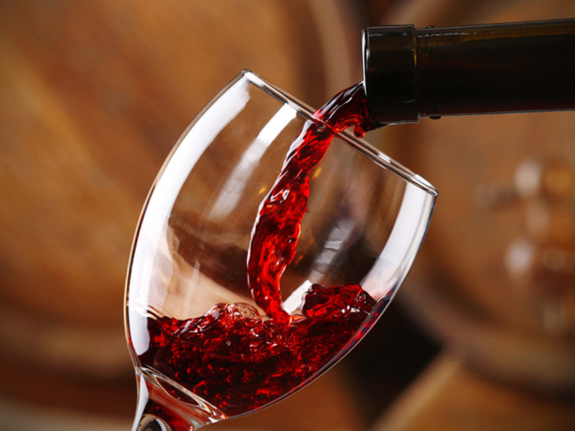
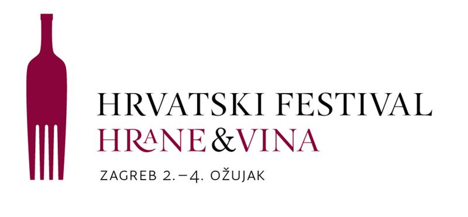
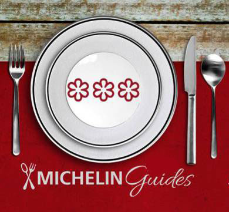
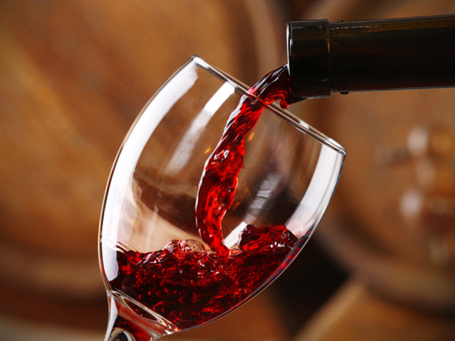

News




Financial Times: Hrvatska je iduća velika gastro destinacija
NOVA generacija chefova, vinara i proizvođača hrane oživljava bogatu gastronomsku baštinu Hrvatske, piše Financial Times u članku o Hrvatskoj. More ...

U Zagrebu počinje festival hrane i vina
"Hrvatski festival hrane i vina održava se u ... More

Dva nova restorana u Hrvatskoj s Michelinovom zvjezdicom
Restorani "Sljeme" iznad Zagreba i "LD Terrace" u Korčuli novi su dobitnici po jedne Michelinove zvjezdice u ovoj godini.More ...
DOČEK NOVE GODINE U RESTORANU SLJEME - ALL INCLUSIVE - 370 KN
Dočekajte Novu godinu uz domaću glazbu u ugodnoj atmosferi restorana Sljeme. More ...
